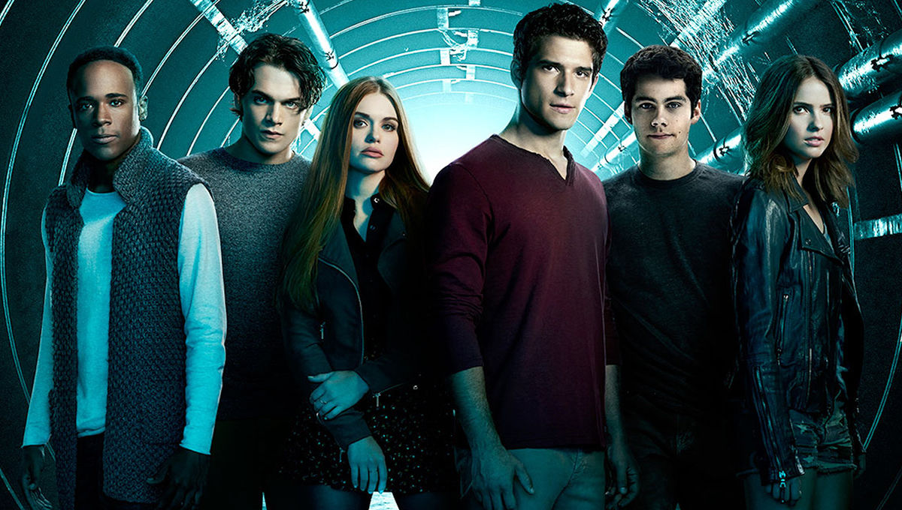

The series revolves around social outcast Scott McCall, a high school student living in the town of Beacon Hills. Scott's life drastically changes when he is bitten by a werewolf the night before sophomore year, becoming one himself. He must henceforth learn to balance his problematic new identity with his day-to-day teenage life. In season one, Scott and his human best friend "Stiles" Stilinski begin to encounter other characters with a connection to the supernatural goings-on in Beacon Hills. Scott's initial love interest is Allison Argent, a classmate of his who comes from a family of werewolf hunters. Her best friend is popular girl and genius Lydia Martin, who later discovers she is a banshee. Scott and Stiles routinely clash with Lydia's aggressive boyfriend, jock Jackson Whittemore, as well as Derek Hale, a mysterious werewolf with a dark past. As the show progresses, Scott is joined by new friends in Malia Tate, a werecoyote; Kira Yukimura, a kitsune; and Liam Dunbar, a young werewolf with anger issues.
